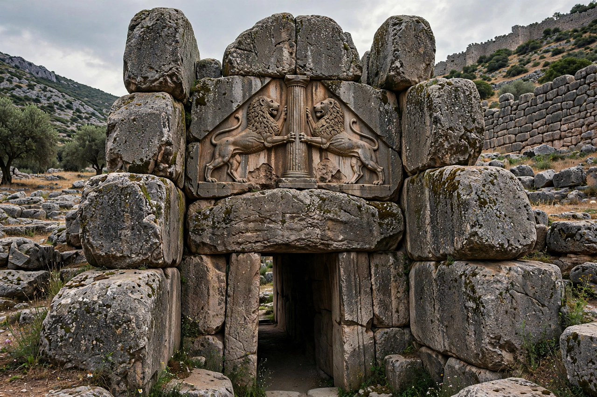

Mycenaean Greece

Period: c. 1750 – c. 1050 BCE
Major centres: Mycenae, Tiryns, Pylos, Thebes, Athens
Language: Mycenaean Greek (Linear B)
Era: Late Bronze Age
Mycenaean Greece (or the Mycenaean civilization) was the last phase of the Bronze Age in ancient Greece, lasting from about 1750 to 1050 BCE. It represents the first advanced and distinctively Greek civilization on the mainland, characterised by palace states, monumental fortifications, a bureaucratic writing system (Linear B) and the society later celebrated in Homer's epics.
History
Greek-speaking peoples entered the southern Balkans around 2000 BCE. By the Shaft Grave era (c. 1750–1500 BCE) wealthy warrior dynasties ruled at Mycenae. From about 1450 BCE the Mycenaeans dominated the Aegean, taking over Minoan Crete and administering Knossos. Independent palace kingdoms at Mycenae, Tiryns, Pylos, Thebes, Orchomenos and Athens traded from Italy to the Levant. Around 1200 BCE the palace system collapsed amid the wider Late Bronze Age collapse; writing was lost and Greece entered its Dark Ages.
Society and economy
Each palace was ruled by a wanax (king), supported by officials and scribes who recorded rations, land, livestock, textiles and bronze on clay tablets in Linear B — deciphered in 1952 by Michael Ventris and shown to be an early form of Greek. Society included landowners, priests, craftsmen, farmers and slaves. Mycenaean religion already featured many Olympian names, including Zeus, Poseidon and Dionysus.
Architecture and burials
Citadels were ringed by massive "Cyclopean" walls; the Lion Gate at Mycenae and the corbelled tholos tombs — such as the so-called Treasury of Atreus — are famous examples. Palaces centred on a megaron with a circular hearth. Grave goods of gold, including funerary masks, attest to elite wealth.
Warfare and legacy
Mycenaean warriors used chariots, spears, tower shields and bronze armour, famously the boar's-tusk helmet described by Homer. Tradition connected Mycenaean heroes — Agamemnon, Odysseus, Achilles — with the Trojan War, and Heinrich Schliemann's excavations at Mycenae and Troy from the 1870s began the field's modern archaeology.
See also: Minoan civilization · Bronze Age · Trojan War